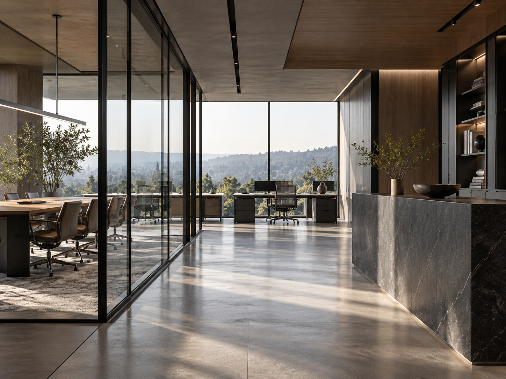
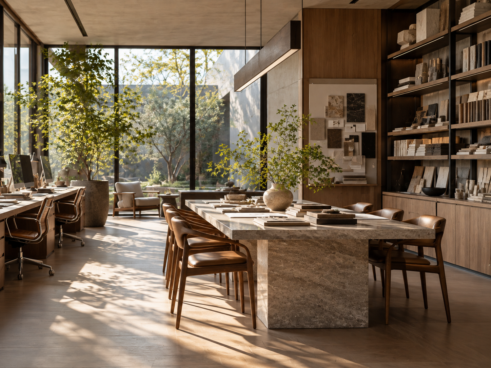
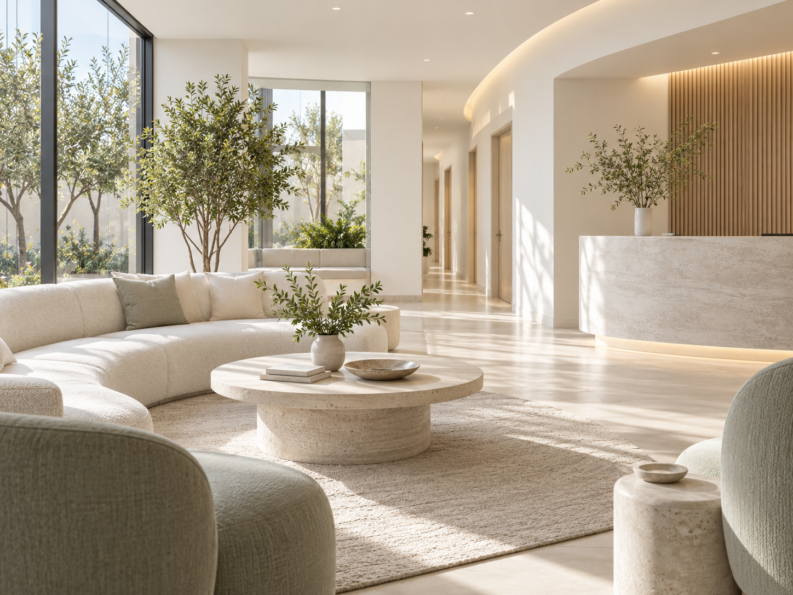

CONNECT
会話が生まれる共有スペース
打ち合わせや短い相談が自然に始まる場所を、日々の動線が交わる位置に設ける計画です。
NESTA DESIGN / 制作実績 / オフィス
Office / Nagoya / 2026

01 / PROJECT INFO
02 / PROJECT CONCEPT
働く人同士の自然なコミュニケーションと、一人で思考を深められる環境。その両立をテーマに、名古屋市内のオフィス改装を想定したプロジェクトです。
窓辺には気軽に集まれる共有スペースを配置し、執務エリアには視線と音に配慮した落ち着きを。行き来のしやすさを保ちながら、目的に応じて居場所を選べる構成を考えました。
木の質感とグリーンをアクセントに、日々の仕事に心地よいリズムが生まれる空間を目指しています。
03 / NESTA DESIGN
働きやすさを支える、3つの工夫。
打ち合わせや短い相談が自然に始まる場所を、日々の動線が交わる位置に設ける計画です。
作業の内容に応じて席を選べる構成とし、視線の向きやエリア間の距離を丁寧に調整しました。
自然光を活かし、木やファブリックを取り入れることで、長く過ごしても落ち着ける空間を考えました。
04 / NESTA DESIGN
空間づくりの参考イメージ。

